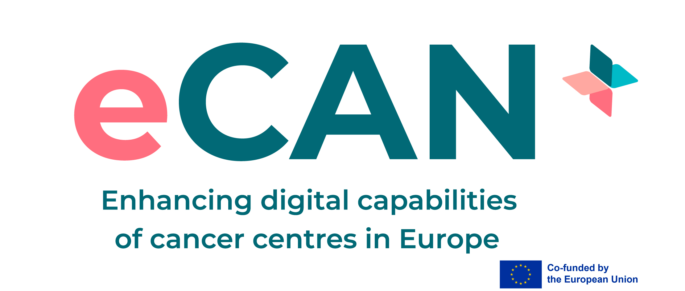

Proyectos europeos
Participamos en proyectos europeos donde la imagen médica y la inteligencia artificial se traducen en mejoras tangibles para la atención sanitaria.
Participamos en proyectos europeos donde la imagen médica y la inteligencia artificial se traducen en mejoras tangibles para la atención sanitaria.
Iniciativa conjunta que evalúa y fortalece el uso de la teleconsulta y la telemonitorización para optimizar la calidad de vida de pacientes con cáncer, mediante programas de telerehabilitación y apoyo psicooncológico. Más de 80 socios en el consorcio.

WP2
Tarea 2.3
WP5
Tareas 5.1 y 5.2
WP6
Tarea 6.3
WP3
Co-coordinación del paquete de trabajo · líderes de la tarea 3.2 · implicados en 3.1, 3.3 y 3.4
Escríbenos para explorar posibles sinergias con tu institución o consorcio.